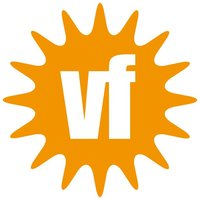
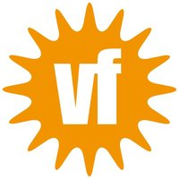
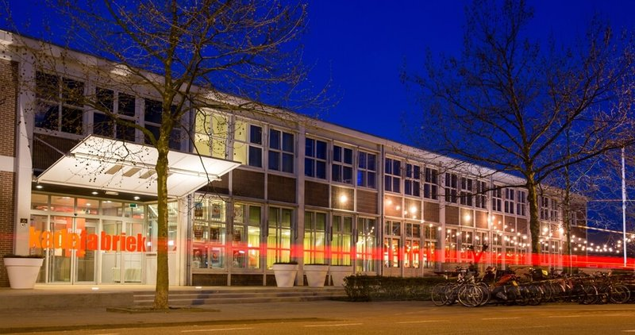

VOJAK
Een sterke psychedelische ervaring
- Dag
- zaterdag
- Begin
- 22:00
- Einde
- 23:00
- Soort
- Show
- Locatie
- Verkade
VOJAK
VOJAK is een Rotterdamse avant-groove band en staat voor een originele mengelmoes van stijlen; experimentele electronica, 70's funk, alternatieve hiphop, Drum&Bass en meer vermengen ze tot een geheel authentieke sound. Het woord Vojak is Slovaaks (afkomst van Toetsenist Tommy van Leuken) voor strijder.
De drie jonge muzikanten strijden met hun muziek voor vrijheid en ruimdenkendheid en vertellen hiermee hun verhaal.
Het trio bestaat uit Bram 't Hart op bass, Mathijs Mens op drums en Tommy van Leuken op keys. Ze verkennen met zijn drieën muzikaal bekend én onbekend terrein waarbij ze hun eigen grenzen telkens verleggen. Elke show is anders en speelt in op de energie van het moment.
Die open en avontuurlijke approach resulteert in een gebalanceerde mix van rauwe improvisatie en slim gecomponeerde songs. In februari 2020 brengen zij hun eerste album uit waarop dit alles te horen is! Mis VOJAK niet en kom naar de Verkade Clubzaal!
 Verkade

Verkade

Clubzaal Theaterzaal Concertzaal
In de Verkadefabriek werden vroeger koekjes gemaakt, maar nu theater, film, dans en muziek.
“Bij de Verkadefabriek gaat het programma erin als zoete koek. Ze geven je een kijkje in hun keuken, maar ook kun je er zelf aan de slag: kom met je wilde ideeën, dan maken zij er wel chocola van! Tijdens het festival serveren ze lekkers in alle soorten en (for)maten. Maar met alle jonge Bossche talenten die er optreden krijg je vooral een koekje van eigen deeg!"